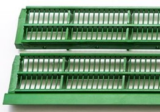
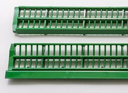

Contre-batteurs sectionnels
Procédure
Ouvrez la trappe à pierres.
Ouvrez complètement le contre-batteur.
Désenclenchez la barre d’amorçage.
Ouvrez le mécanisme de verrouillage du contre-batteur sectionnel.
Remplacez les sections du contre-batteur.
Fermez le mécanisme de verrouillage.
Schéma 1 - Contre-batteur sectionnel
Dans des conditions sèches et cassantes, des sections pour petits grains peuvent aider à réduire la charge du caisson de nettoyage.
Figure 1 - Section pour petits grains
Dans des conditions humides, un contre-batteur mixte améliore la séparation.
Figure 2 - Section mixte